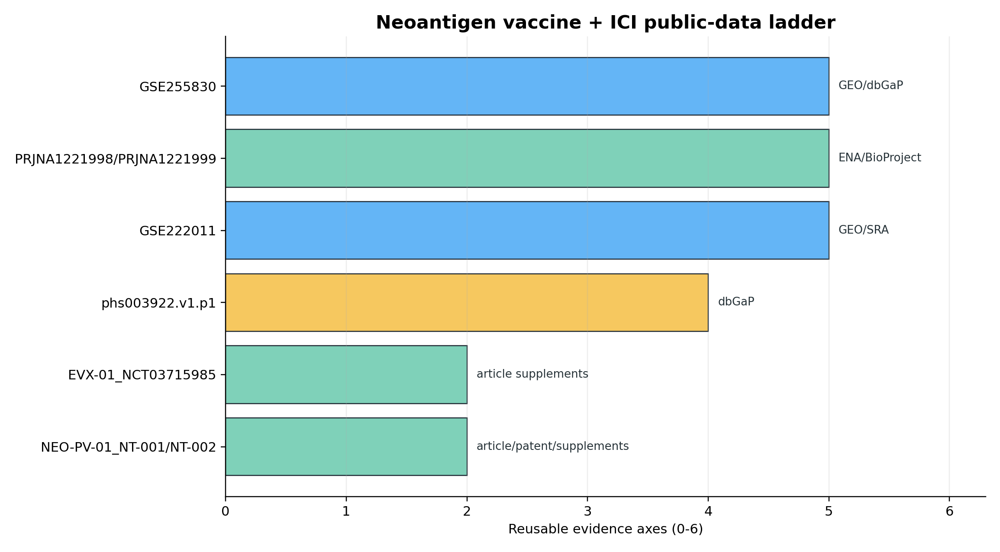

GEO/SRA
GSE222011
autogene cevumeran + atezolizumab + mFOLFIRINOX
direct vaccine+ICI+chemo anchor with real neoantigen-specific T cell biologyBioDarwin/CROSS-Neo can be attached to real combination-therapy datasets now. The safe claim is translational prioritization: epitope selection plus HLA-I/T-cell-inflamed ICI-readiness, not clinical treatment selection.
autogene cevumeran + atezolizumab + mFOLFIRINOX
direct vaccine+ICI+chemo anchor with real neoantigen-specific T cell biologyGNOS-PV02 + INO-9012 + pembrolizumab
cleanest public anti-PD-1 plus personalized neoantigen vaccine single-cell/TCR accessionNeoVax-MI + nivolumab + locally administered ipilimumab
strong adjuvant-optimized vaccine+ICI biology and tumor TCR repertoire remodelingPGV001 + atezolizumab
patient-level manufacture, vaccine content, response, and WES/RNA bridge
| priority | dataset_id | repository | therapy | cancer | public_modality | access_level | algorithm_use | limitation | url |
|---|---|---|---|---|---|---|---|---|---|
| 1 | GSE222011 | GEO/SRA | autogene cevumeran + atezolizumab + mFOLFIRINOX | PDAC | single-cell GEX + TCR | open processed files; SRA raw available | positive-control longitudinal immune-state and TCR-expansion assay lane | small public scRNA/TCR subset; not a stand-alone response predictor dataset | https://www.ncbi.nlm.nih.gov/geo/query/acc.cgi?acc=GSE222011 |
| 2 | GSE255830 | GEO/dbGaP | GNOS-PV02 + INO-9012 + pembrolizumab | HCC | single-cell T-cell GEX + TCR | open processed GEO files; raw data withheld to dbGaP by IRB restriction | post-vaccine TCR clonotype and phenotype validation lane | week-12 post-treatment only; only 3 patients in GEO | https://www.ncbi.nlm.nih.gov/geo/query/acc.cgi?acc=GSE255830 |
| 3 | phs003922.v1.p1 | dbGaP | PGV001 + atezolizumab | urothelial cancer | tumor/normal WES + tumor RNA-seq | controlled access only | best WES/RNA design-audit dataset after dbGaP approval | not open GEO; requires dbGaP authorization | https://www.ncbi.nlm.nih.gov/projects/gap/cgi-bin/study.cgi?study_id=phs003922.v1.p1 |
| 4 | PRJNA1221998/PRJNA1221999 | ENA/BioProject | NeoVax-MI + nivolumab + locally administered ipilimumab | melanoma | raw sequencing project metadata | ENA project; practical file inventory still needed | CD8 boosting and intratumoral TCR-remodeling comparator | not a GEO matrix; needs ENA inventory/download pass | https://www.omicsdi.org/dataset/project/PRJNA1221998 |
| 5 | EVX-01_NCT03715985 | article supplements | EVX-01 + anti-PD-1/PD-L1 | melanoma | clinical table, peptide/T-cell immunomonitoring supplements | supplement-level extraction | industrial-style immunogenicity response benchmark, not omics reanalysis | no open WES/RNA/scRNA matrix found | https://pmc.ncbi.nlm.nih.gov/articles/PMC11116868/ |
| 6 | NEO-PV-01_NT-001/NT-002 | article/patent/supplements | NEO-PV-01 + anti-PD-1 +/- chemotherapy | melanoma, NSCLC, urothelial | clinical and immune-monitoring tables; accession not confirmed | supplement-level extraction unless accession is found | historical comparator and response/timing logic | not an immediate public matrix | https://doi.org/10.1016/j.cell.2020.08.053 |
| stage | work_block | input | output | decision |
|---|---|---|---|---|
| A | Public combo registry lock | GSE222011, GSE255830, phs003922, PRJNA1221998/1999, EVX-01, NEO-PV-01 | auditable dataset registry with access level and claim boundary | GO now |
| B | Open GEO single-cell/TCR reanalysis | GSE222011 + GSE255830 processed matrices | T-cell phenotype, clonotype expansion, cytotoxic/exhaustion/memory modules, vaccine timepoint plots | GO next |
| C | BioDarwin attach layer | BioDarwin v4 mode bank, CROSS-Neo, BigMHC, public candidate tables | algorithm-to-immune-response concordance where peptide/HLA labels are public enough | GO after B |
| D | ICI readiness anchor | Paper 11 Phase C n=421 + HLA Track18 | tumor-level HLA-I/IFNG/checkpoint/cytolytic response gate | already GREEN as external coherence, not thyroid response prediction |
| E | Controlled WES/RNA expansion | dbGaP phs003922 PGV001 + atezo; ENA NeoVax-MI project inventory | patient-level vaccine design audit and clonality/HLA gate | submit/access or inventory required |
| F | Nature Cancer claim package | B-E | vaccine-selection algorithm plus ICI-readiness model; mechanism shown as antigen presentation and T-cell state | target after open GEO reanalysis + one controlled-data plan |
| claim_class | claim | evidence |
|---|---|---|
| Allowed now | Public neoantigen-vaccine + ICI datasets exist and can anchor a BioDarwin/CROSS-Neo translational extension. | GSE222011, GSE255830, phs003922, PRJNA1221998/1999 registry |
| Allowed after open GEO reanalysis | BioDarwin-ranked immune-response features align with vaccine-induced T-cell state or clonotype expansion in public combo datasets. | requires GSE222011/GSE255830 processed matrix analysis |
| Allowed as external coherence | ICI response biology is HLA-I/IFNG/checkpoint/cytolytic-driven across non-vaccine ICI cohorts. | Paper 11 Phase C n=421 and Track18 HLA-I OR=1.35, p=0.014 |
| Forbidden now | Clinical-grade vaccine or ICI treatment selection. | small public combo cohorts and post-hoc algorithm development |
| Forbidden now | Thyroid cancer ICI response predictor. | no thyroid ICI response cohort in this package |
| Forbidden now | BioDarwin superiority over industrial platforms in patients. | needs frozen external patient-level validation and prospective assay feedback |
Paper 3 Track A remains frozen. This page is an analysis scaffold for a vaccine+ICI translational package and does not claim a thyroid ICI response predictor.
project/results/p_neo_ici_combo_2026_05_11/
project/results/biodarwin_pan_vaccine_ga_rl_2026_05_10/
project/results/paper11_pancancer/phase_C_ICI/
project/results/hla_deepdive_2026_05_08/track18_ici_hla/